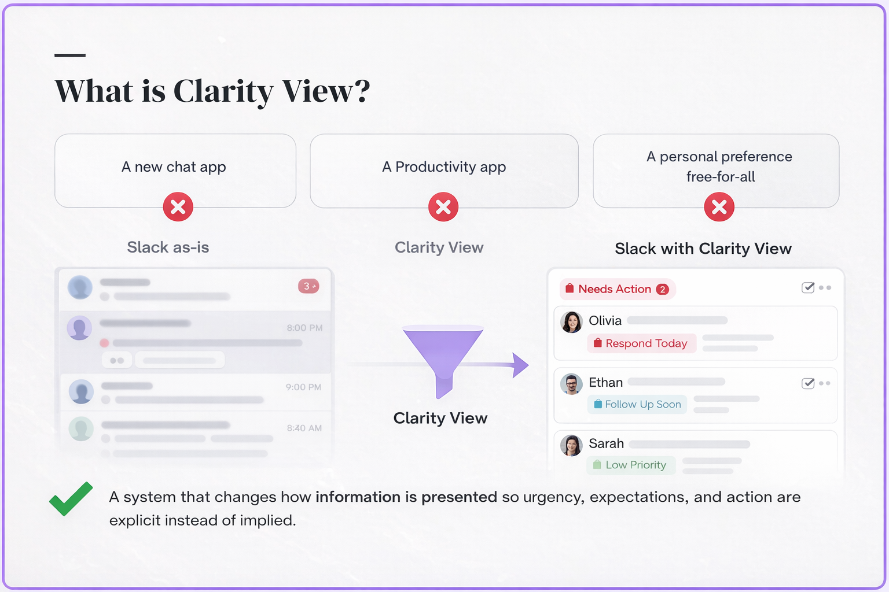
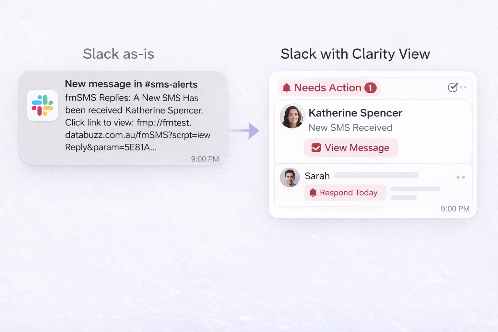
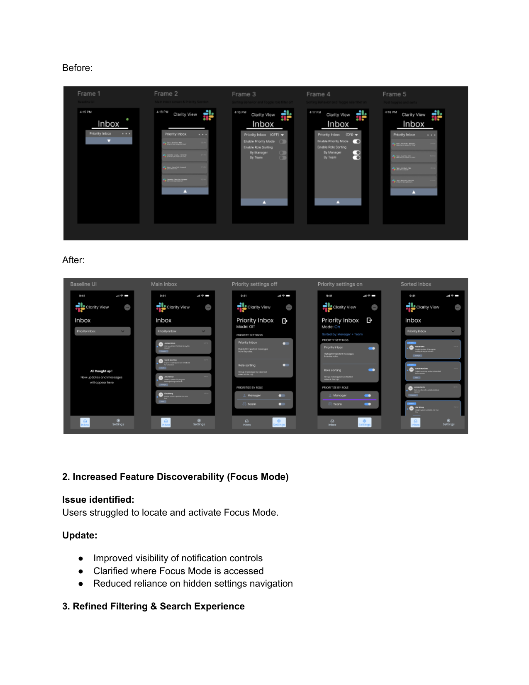

Clarity View - Communication Overlay for Slack
A capstone concept that helps users reduce notification overload, identify important messages faster, and stay focused in digital work environments.
Clarity View
A Slack enhancement concept built around a simple idea: users should not have to manually dig through every message to understand what matters.


Selected screens and presentation visuals from the Clarity View capstone prototype.
Project Overview
Clarity View began with a common problem in school and workplace communication: users receive constant messages, but the system does not help them decide what actually needs attention. The result is a cycle of checking, switching, and reacting.
This is an unshipped capstone concept built as a visible overlay for Slack. The prototype does not simulate backend functionality. Instead, it shows the before state, the after state, and the interaction that creates the change.
The Problem
How might we help users:
- Identify important messages without scanning every channel.
- Reduce notification fatigue during focused work.
- Understand what changed when a prioritization feature is enabled.
- Stay inside a familiar communication tool instead of learning a new platform.
Our interviews showed that users already prioritize manually, usually by sender, channel, or perceived urgency. Current tools make that work invisible and repetitive.
My Approach
- Research synthesis through interviews, affinity mapping, and behavioral variables.
- Agile pre-sprint planning to define hypotheses, MVP priorities, and team ownership.
- Feature-state prototyping to show one base screen, one changed screen, and one trigger per feature.
- Usability testing to evaluate clarity, discoverability, usefulness, and believability.
The goal was not to rebuild Slack. The goal was to improve how information is presented inside a system users already understand.
What Success Would Look Like
Because Clarity View is a concept prototype, success was defined through measurable usability signals rather than product analytics.
Design Stack and Methods
Research and Synthesis
The project moved from broad communication pain points into specific behavioral patterns that shaped the product direction.
Users already prioritize manually
Participants sorted importance based on sender, role, timing, or context. The system rarely helped them do that work faster.
Notification overload creates anxiety
Users described checking repeatedly because they were worried about missing something important, even when most messages were not urgent.
Familiar systems reduce friction
Instead of creating a new platform, Clarity View worked best as an enhancement to an interface users already know.
Discoverability determines usefulness
Usability testing showed that a helpful feature can still fail if users cannot find it or cannot see what changed.
Personas
After interviews and affinity mapping, the team narrowed multiple proto-personas into two validated personas. A third persona would have repeated the same needs without adding a meaningful new workflow.
Phil
Reactive communicator
Phil is easily overwhelmed by notifications, switches between platforms, and responds quickly because he is afraid of missing something important.
- Needs fewer distractions.
- Needs clearer priority signals.
- Needs confidence that important messages will not be missed.
Miranda
Structured communicator
Miranda is organized and intentional. She prefers clear workflows, dislikes clutter, and wants to find important information without digging through layers of UI.
- Needs efficient sorting.
- Needs quick access to relevant messages.
- Needs simple systems that support her existing workflow.
Core Features
During pre-sprint planning, features were split across pairs. Each pair focused on one base state, one changed state, and one clear interaction.
Priority Inbox and Smart Sorting by Role
Messages are surfaced by role and relevance, making manager or team messages easier to identify before less urgent communication.
Notification Filtering and Focus Mode
Users can turn on Focus Mode, choose apps or channels to suppress, and return later to a calmer summary of what they missed.
Quick Filters and Search by Importance
Filters and search help users narrow message results by urgency, sender, or content type instead of scrolling through a full feed.
Prototype Framing
The turning point was realizing the Figma prototype did not need to behave like a real extension. It needed to clearly show the visible effect of each feature.
This reframing helped the team move from trying to build technical functionality to testing whether users understood the concept, noticed the change, and believed the feature would help.
Visual Direction
We used Slack UI conventions as a foundation, then introduced Clarity View's blue visual language to support calmness, focus, and clearer information hierarchy.


Usability Testing
Testing focused on clarity, believability, usefulness, and discoverability. Because the prototype was a concept, we tested whether participants understood the interaction rather than whether backend functionality worked.
Priority Inbox tested as conceptually useful
Users understood why prioritization mattered, but the visual difference between off and on states was too subtle in the first version.
Focus Mode had the biggest discoverability issue
Users could not always find where Focus Mode lived, so the team added clearer toggles, app-selection steps, save states, and stronger outcomes.
Quick Filters tested strongest
Participants found filtering familiar and useful. The main improvements were more realistic content and better search visibility.
Design Updates
The clearest lesson from testing was that good ideas still fail when the user cannot see what changed. The final update focused on hierarchy, visibility, and realistic content.

What I Learned
Clarity View was as much a team and product management challenge as it was a design challenge.
Reframing the prototype unlocked progress
Once we stopped trying to make Figma behave like a real extension, we could focus on visible state changes and user comprehension.
Visual hierarchy is not decoration
If the user cannot see what changed, the interaction did not communicate enough. That shaped the final priority badges, role chips, and active states.
Team coordination is part of the design work
Keeping feature teams aligned required clear scope, repeated framing, and documentation so everyone could move in the same direction.